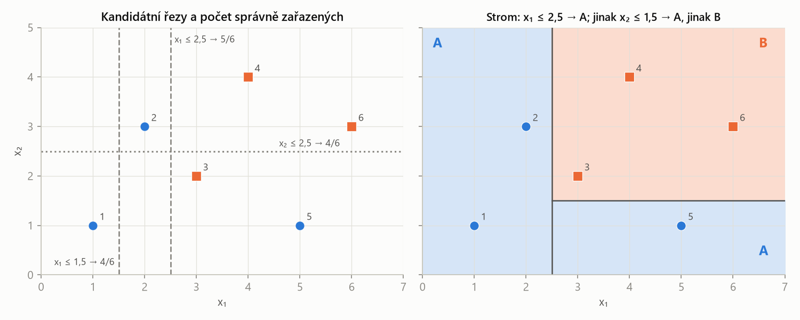

MLR – průběžný test 1 · Stromy, bagging a SVM – MLR · https://balnerm.github.io/pripravy/mlr/test1/08_stromy_ansambly.html
Typ úloh 8
Stromy, bagging a SVM
Úloha A5 („Read votes and bootstrap sampling“) spojuje čtení kódu (V.mean(axis=1) > 0.5), accuracy a otázku, co dělá rng.choice(n, size=n, replace=True). Cvičení 6 k tomu přidalo strom na papíře (šest bodů, tři řezy), vlastní bagging s 11 stromy a SVM s parametry C a γ. Přednáška 6 počítala nečistotu uzlu 4 : 1 (Gini 0,32, entropie 0,72 bitu).
Rozhodovací strom na papíře
Rozhodovací strom dělí prostor příznaků postupně řezy tvaru \(x_j \le s\) (svislá nebo vodorovná čára); každý list předpovídá majoritní třídu svých trénovacích bodů. Řez se volí tak, aby co nejvíc snížil nečistotu (ve cvičení zjednodušeně: maximalizoval počet správně zařazených).
dvacet otázek typu „je x₁ menší než 2,5?“. Proto stromy nepotřebují škálování – změna měřítka jen posune práh.
Giniho nečistota uzlu je \(G = \sum_y p(y)\,(1 - p(y))\), kde \(p(y)\) je podíl třídy y v uzlu. Pro dvě třídy \(G = 2p(1 - p)\): 0 pro čistý uzel, 0,5 pro půl na půl.
pravděpodobnost, že se splete náhodný tip podle četností v uzlu. Kvalita řezu = vážený průměr nečistot potomků (váha = podíl bodů).

Nejlepší první řez x₁ ≤ 2,5 nechá vlevo čistou oblast A a vpravo jediný špatný bod (5). Druhý řez x₂ ≤ 1,5 v pravé oblasti ho oddělí → všech 6 správně.
| Point | 1 | 2 | 3 | 4 | 5 | 6 |
|---|---|---|---|---|---|---|
| x₁ | 1 | 2 | 3 | 4 | 5 | 6 |
| x₂ | 1 | 3 | 2 | 4 | 1 | 3 |
| Class | A | A | B | B | A | B |
Try the cuts x₁ ≤ 1.5, x₁ ≤ 2.5, x₂ ≤ 2.5. Assign each side its majority class and count correct predictions over all six points. Choose the best cut, split its impure region once more and trace point 5.
Řešení krok po kroku
- x₁ ≤ 1,5: vlevo {1} → A (1 správně); vpravo {2, 3, 4, 5, 6} = A, B, B, A, B → B (3 správně). Celkem 4.
- x₁ ≤ 2,5: vlevo {1, 2} → A (2); vpravo {3, 4, 5, 6} = B, B, A, B → B (3). Celkem 5.
- x₂ ≤ 2,5: dole {1, 3, 5} = A, B, A → A (2); nahoře {2, 4, 6} = A, B, B → B (2). Celkem 4.
Nejlepší je x₁ ≤ 2,5. Nečistá je pravá oblast (bod 5 je A). Řez x₂ ≤ 1,5 oddělí bod 5 (x₂ = 1) od 3, 4, 6 (x₂ ≥ 2) → všech 6 správně. Bod 5: x₁ = 5 > 2,5 → doprava; x₂ = 1 ≤ 1,5 → A.
Compute the Gini impurity of the root (3 A : 3 B), of a 4 : 1 leaf, and the weighted impurity after the cut x₁ ≤ 2.5 (left 2 A : 0 B, right 1 A : 3 B).
Řešení krok po kroku
Pro srovnání: entropie listu 4 : 1 je ≈ 0,72 bitu, chybovost 0,2.
Bootstrap a bagging
Bootstrapový vzorek vznikne n-násobným výběrem řádků trénovacích dat s vracením: má stejnou velikost n, některé řádky se opakují a jiné chybí. Pravděpodobnost, že konkrétní řádek nebude vybrán, je \((1 - 1/n)^n \approx e^{-1} \approx 0{,}37\).
každý strom vidí trochu jiná data (asi 63 % unikátních řádků), proto se stromy liší a jejich hlasování snižuje rozptyl. Vynechané řádky (out-of-bag) mohou sloužit jako validace toho stromu.
Bagging (bootstrap aggregation) natrénuje M modelů, každý na vlastním bootstrapovém vzorku, a jejich predikce spojí: v klasifikaci většinovým hlasováním, v regresi průměrem. Random forest navíc v každém uzlu zkouší jen náhodnou podmnožinu příznaků (max_features), takže jsou stromy méně korelované.
„moudrost davu“: jeden hluboký strom je nestabilní, průměr mnoha různých stromů je stabilnější. Funguje jen tehdy, když se stromy liší.
Three trees predict labels 0 or 1. Each row of V is one validation sample; each column is one tree. The true labels are given in the same row order.
\[ V = \begin{bmatrix} 0 & 1 & 0 \\ 1 & 1 & 0 \\ 0 & 0 & 1 \\ 1 & 1 & 1 \end{bmatrix},\qquad \mathbf y_{\text{val}} = \begin{bmatrix} 0 \\ 1 \\ 1 \\ 1 \end{bmatrix} \]y_hat = (V.mean(axis=1) > 0.5).astype(int)a) Explain axis=1 and write all four predictions. (0.5)
b) Calculate the ensemble's validation accuracy. (0.25)
c) Each tree trains on n rows drawn using rng.choice(n, size=n, replace=True). Can a row occur twice? Must every training row occur in each draw? (0.25)
Řešení krok po kroku
a) axis=1 průměruje podél sloupců, tedy přes stromy v každém řádku: pro každý vzorek podíl stromů, které hlasují pro 1. Výsledek má tvar (4,).
(> 0,5 = většina stromů hlasuje pro 1.)
b) Shody s [0, 1, 1, 1]: ano, ano, ne (vzorek 3), ano → accuracy = 3/4 = 0,75.
c) Ano – výběr je s vracením, stejný index může padnout víckrát. Ne – některé řádky v daném tahu chybí (v průměru asi 37 %); jsou to out-of-bag řádky toho stromu.
axis=1 averages over the columns (trees) within each row, giving the fraction of trees voting 1 for each sample: [1/3, 2/3, 1/3, 1] → predictions [0, 1, 0, 1]. Accuracy = 3/4. Yes, a row can appear more than once (sampling with replacement); no, some rows are usually missing from each draw (about 37 %).
a) Five trees, rows [1, 0, 1, 1, 0], [0, 0, 1, 0, 1], [1, 1, 1, 0, 0], true labels [1, 1, 1]. Predictions and accuracy? b) With four trees a row [1, 1, 0, 0] has mean 0.5. What does the code predict, and why?
Řešení
a) 3/5 = 0,6 → 1; 2/5 = 0,4 → 0; 3/5 → 1. Shody s [1, 1, 1]: 2 ze 3.
b) Remíza se při ostré nerovnosti rozhodne pro 0. Proto se v baggingu volí lichý počet stromů (cvičení: 11).
trees = []
for m in range(11):
rng = np.random.default_rng(0)
idx = rng.choice(n_train, size=n_train, replace=True)
tree = DecisionTreeClassifier(random_state=m).fit(X_train[idx], y_train[idx])
trees.append(tree)
votes = np.column_stack([t.predict(X_val) for t in trees])
y_hat = (votes.mean(axis=1) > 0.5).astype(int)a) What is wrong with the sampling? b) What is the shape of votes for 40 validation rows?
Řešení
a) default_rng(0) uvnitř smyčky dá pokaždé stejné indexy, stromy jsou (skoro) stejné a hlasování nic nepřinese. Generátor se má vytvořit jednou před smyčkou. Správně je, že X_train[idx] a y_train[idx] používají stejné idx (páry zůstanou spolu).
b) Každý strom dá vektor (40,), column_stack je dá do sloupců → (40, 11): řádek = vzorek, sloupec = strom.
For n = 2, 10 and large n, what is the probability that a given row is not in a bootstrap sample?
Řešení
Jeden tah řádek mine s pravděpodobností \(1 - 1/n\), n nezávislých tahů: \((1 - 1/n)^n\). Pro n = 2: \((1/2)^2 = 1/4\); n = 10: \(0{,}9^{10} \approx 0{,}349\); limita \(e^{-1} \approx 0{,}368\).
SVM: C a γ
C je cena za porušení okraje: malé C = silnější regularizace, širší okraj, víc support vektorů, hladší hranice; velké C = méně tolerance chyb, užší okraj, riziko přeučení. γ u RBF jádra \(\exp(-\gamma\|\mathbf x - \mathbf x'\|^2)\) určuje šířku vlivu bodu: velké γ = úzké „hrboly“, hranice obtáčí jednotlivé body (přeučení), malé γ = hladká, skoro lineární hranice.
obě veličiny jdou stejným směrem: zvětšení = složitější model. SVM potřebuje škálování (pipeline se StandardScaler).
| C | train acc | val acc | support vectors |
|---|---|---|---|
| 0.01 | 0.80 | 0.79 | 120 |
| 1 | 0.93 | 0.92 | 40 |
| 100 | 0.94 | 0.91 | 25 |
Which C would you choose and why? What does the support-vector count tell you? What happens with an RBF kernel and gamma = 1000 on the circles data?
Řešení
C = 1 – nejvyšší validační accuracy. Malé C: silná regularizace, široký okraj, mnoho bodů v pásu (120 SV), podučení. Velké C: trénovací accuracy roste, validační klesá – začíná přeučení, méně SV. RBF s γ = 1000: každý bod má úzký vliv, trénovací accuracy ≈ 1, validační výrazně nižší (přeučení). Výběr C a γ podle validace / CV.
axis=1= přes stromy (sloupce) pro každý vzorek.- Ostrá nerovnost
> 0.5: remíza → 0. - Bootstrap = s vracením a stejné indexy pro X i y.
- Generátor náhodných čísel vytvořit jednou před smyčkou.
- Gini z přednášky: \(\sum p(1 - p)\) = \(1 - \sum p^2\).
- Hlasování nemusí vždy pomoct – stromy musí být různé a lepší než náhoda.
U hlasování: význam osy, průměry jako zlomky, predikce, porovnání s labely. U bootstrapu dvě odpovědi „yes/no“ s důvodem (with replacement; out-of-bag rows).
Strom = řezy \(x_j \le s\) a majoritní třída v listu; bagging = bootstrapové vzorky + hlasování; random forest navíc náhodné příznaky; SVM: ↑C a ↑γ = složitější hranice.
Shrnutí
Rozhodovací strom vybírá řezy podle jednoho příznaku tak, aby potomci byli co nejčistší (Gini, entropie; ve cvičení počet správných). Bagging trénuje stromy na bootstrapových vzorcích – výběr s vracením, takže řádky se opakují a asi 37 % chybí – a jejich predikce spojuje hlasováním; v NumPy je to průměr matice hlasů přes osu stromů a práh 0,5. Random forest snižuje korelaci stromů náhodným výběrem příznaků. U SVM parametr C a šířka RBF jádra γ řídí složitost hranice.
Take-home messages
- Řez: majoritní třída na každé straně, počítej správné nebo Gini.
- Gini \(2p(1 - p)\): 0 čistý, 0,5 půl na půl, 4 : 1 → 0,32.
(V.mean(axis=1) > 0.5).astype(int)= většinové hlasování po vzorcích.- Bootstrap: opakování ano, všechny řádky ne (~63 % unikátních).
- ↑C, ↑γ = složitější SVM; volit podle validace.
Otázky k testu
Proč bagging snižuje rozptyl?
Průměr (hlasování) mnoha různých, málo korelovaných modelů kolísá méně než jeden model; bootstrap zajistí, že se stromy liší.
Co přidává random forest k baggingu?
V každém uzlu vybírá řez jen z náhodné podmnožiny příznaků (max_features), takže stromy jsou méně podobné a průměr účinnější.
Co jsou out-of-bag vzorky?
Řádky, které se do bootstrapového vzorku daného stromu nedostaly (~37 %); lze na nich strom hodnotit bez zvláštní validace.
Proč strom nepotřebuje standardizaci?
Řez \(x_j \le s\) závisí jen na pořadí hodnot jednoho příznaku; změna měřítka posune práh, ale ne rozdělení bodů.
Jak se změní SVM při zvětšení C?
Méně toleruje chyby, okraj se zúží, ubude support vektorů, trénovací accuracy roste, hrozí přeučení.
Proč se v baggingu volí lichý počet stromů?
U dvou tříd se tím vyhne remízám v hlasování.